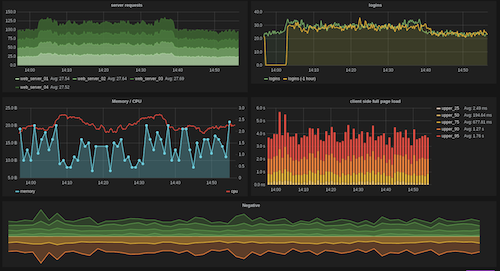

I remember when I heard about graphite/statsd. It was late of 2012 in the Python London Group. Few weeks before I read Lean Startup and I learnt to measure all the things to improve our business.
In early 2013 I started to use graphite. I tracked all logins, custom events, machine performance and all the running calls in the Foehn platform. After a few weeks I felt in love with Statsd/Graphite.
About Statsd/Graphite
Graphite born to help all the developers to monitoring their Apps. The complete stack (Graphite/statsd/Grafana) is a opensource Application Performance Management (APM). This stack is an opensource alternative to NewRelic or datadog.
When we speak about graphite, we are speaking about 3 different projects:
Graphite: is a meta-package with the following components:
- Carbon: Is a daemon that listens for time-series data. UDP server with simple one direction protocol.
- Whisper: A simple database library for storing time-series data (Similar in design to RRD).
- Graphite Webapp: Django app that renders graphs on-demand.
Statsd: Statsd was born to fix Carbon weakness. Statsd is a wrapper that support metric types. This wrapper makes graphite more powerful.
Grafana: previous projects are for store information. Grafana make the sexy part and it's a dashboard where the info can be shared.
Note: In the last year, a new event database is growing into the community. InfluxDB is more powerful than Graphite, supports different data types, and supports statsd protocol. Feel free to use with statsd_module. Community love it.
Why Statsd/Graphite
Graphite stack helps developers to measure all the things. It's not a sql/no-sql database. It's a database designed to save realtime/events info, tools to aggregate the info after hours, days or years and finally provide an http rest API.
- The main features of graphite are:
- Save the info about events quickly. Only a simple key with value example: ('kamProd.gateways.gateway5').
- Find with a quick look your keys in the graphite web app or grafana.
- Compare information between days/hours.
- Make graphs related with Phones, Web, gateways, custom apps, or whatever you want.
- See trends in your platform in a simple panel.
- Compare numbers, a lot of different numbers.
To deep more into graphite in this talk: Video and Slides or in this blog post.
Business Uses
Activating statsd module in kamailio could allow you to measure the following things:
- How many requests have been processed and how long each request took.
- The load of the gateways.
- How many invites have been received without proper number format.
- How many reinvites do you have in the application.
- Media Codec logging to make sure that always HD codec. :-)
- Test how long take a database query.
- Count how many invalid register do you have in the application.
- Count how many connections are using tls.
Those are only few examples. Whatever you want to measure, can be measured without any trouble.
Technical info
To enable statsd in Kamailio you need to add the module in the compile flags:
make include_modules="statsd" cfg make install
Kamailio statsd only has 2 module parameters. IP and Port.
Exported functions match with statsd metric types:
SET: Simple info based on metric-value. Kamailio module example
Gauge: Simple info too, but in this case if flush interval is not defined, statsd will send to graphite the last value. You can send +1 or -1 in the value field. Kamailio module example
Timming Options: Timing is useful. Can be use statsd_start and statsd_stop to track how long took the code between start and stop.
Counting Options: If you want to track decrements or increments statsd_incr and statsd_decr and this match exactly with statsd counting definition.
This is a simple counter. Add 1 to the "gorets" bucket. At each flush the current count is sent and reset to 0. If the count at flush is 0 then you can opt to send no metric at all for this counter, by setting config.deleteCounters (applies only to graphite backend). Statsd will send both the rate as well as the count at each flush.
Installing Graphite
Install graphite is hard if you are not familiarized with python tools. My advice is to follow this dockerfile and test it using docker. At the moment I'm running a system with more than 1700 metrics keys and it works perfectly.
Graphite/Statsd Environment
Environment is always important. Graphite environment is growing and it's important to add in this list:
- CabotApp: Monitor and alert system for your metrics. Gateway can be disabled if you are getting more than 100 5XX replies from it.
- Diamond: Python daemon that collects system metrics. With a lot of useful collectors.
My advices
- Use the docker image to start to test and production too!
- Grafana is a good friend, all your company will love it. You must see this video
- Graphite query language is quite powerful, have a look to the functions
- TimeShift function is one of the best functions in graphite.
- The learning curve of graphite is not easy. You can try with one metric and try every week to add a new graph in grafana.